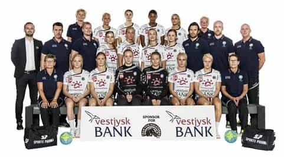
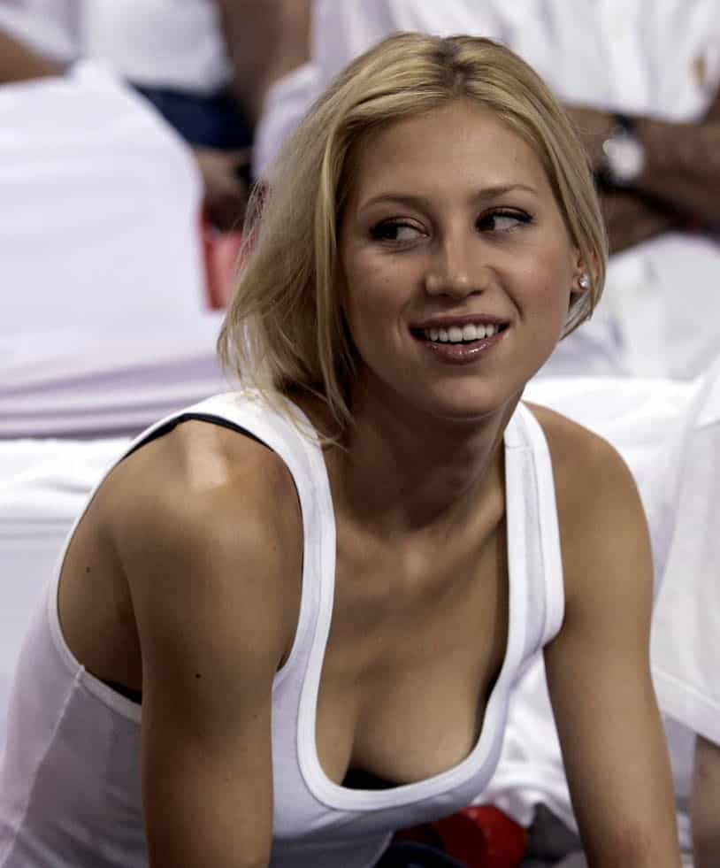

< < < Back
Female Danish Athletes Diminish Their Own Championship Victory By Taking Nude Photos – Return Of Kings
A female sports team has celebrated winning the Women’s European Handball Federation Cup by posing naked with their trophy. In a photograph that shows both the attention-seeking narcissism and self-objectification rampant amongst Western women today, members of the winning Danish squad, Tvis Holstebro, use different angles, their teammates’ bodies, their hands or even the trophy itself to conceal their breasts and genitals.
Once more, the self-objectification of female athletes raises important questions about the relative value of women’s sports. Men are routinely denigrated, attacked and witch-hunted for judging female athletes on their bodies, yet those in female sports, provided they have semi-decent figures (or even only scary ones), seem to take every opportunity to try to exploit and then commercialize their sexuality.
People like British “psychologist” Priscilla Choi have in the past complained that female athletes are evaluated more on their looks than their athletic ability. There are nonetheless at least two glaring holes in this kind of argument: 1) women are generally and markedly inferior to men in sports and 2) female athletes themselves directly participate and even want objectification if it is profitable for them.
As you would expect in these hypocritical times of ours, female athletes and their backers have demanded that they be taken as seriously as the men over recent years. Forgetting the fact that even boys’ teams are frequently superior to adult women’s teams, female athletes want “equality” for providing grossly inferior performances. They want their own gendered fields so as to not compete with the men, maintaining the very flimsy illusion that the women are just as good and worthy of similar or identical remuneration.
Is there an actual justification for taking female athletes like those in the Tvis Holstebro squad seriously, especially after the otherwise “sexist” behavior of arranging the nude photograph or the all-round self-objectification female athletes use? Why can’t their sporting prowess, including compared to men, do all the talking?
A joke from the start

And what a joke it is to try and treat this team as an equal alternative to the men’s one from the same club.
Tvis Holstebro’s European finals victory occurred in the early part of May against a Russian side. Provided the women in the photograph are from Tvis Holstebro, it appears likely that they were jealous of the greater attention men’s handball or men’s sports in general get in Denmark. Surprisingly to those not familiar with the differences between the Nordic countries, Denmark has a reputation for being the most conservative of the five culturally Scandinavian societies. It may not be saying much to describe Denmark in this way, but it is the least socially insane of the group. So, what better way to get some desperately craved attention than “leaving” a sexualized picture or two in the hope that someone would leak it to the media and it would go viral?
There has, however, been some confusion after the nude team photograph gained widespread attention. Some have alleged that the team is not Tvis Holstebro but rather a somewhat non-adult under-18’s team from the Copenhagen region. If this alternative explanation is true, it is even worse. Unlike many other behaviors, like underage shoplifting and associated petty crimes, sexualized attention-whoring established in adolescence usually gets worse as girls enter adulthood.
Plus, if it is indeed an under-18’s team, some of the women may be underage. “Under-18” sports teams very often include those who have recently turned 18 but also, as the name would suggest, those below 18. There may be no direct nudity in the photograph, but there is a world of difference socially-speaking between some underage girls posing nude but covered and very young adults doing the same thing.
Regardless of which explanation is the correct one, the main argument still stares squarely in the face at us: women’s sports have become a set of circuses for political correctness and self-objectification. If you cannot compete in athletic ability, which is the primary impetus for the attention sportspeople receive, take out your breasts and vaginas and make the barest of attempts to cover them, if you cover them at all. Empower yourself and show everyone you’re equal to the men!
Ignore women’s sports at all costs

The Anna Kournikova Effect explains why women’s sports can be so popular. It’s definitely not for their equal athletic ability when compared to the men!
Women should be physically active, just as the Tvis Holstebro handball team is. Since its inception, which predates my time writing here, Return Of Kings has chronicled the obesity epidemic that is encouraging women in particular to take pride in being ridiculously overweight from laziness. Notwithstanding all this, there is a huge disparity between having women keeping themselves fit and moronically telling them that their athletic endeavors are objectively as good as the men or deserving of equal pay for “equal” work.
Given the inferiority of professional female athletes to male ones, female sports are just not worth your consideration. Already, rabid feminists are trying to brainwash the general population into thinking that both gendered fields are equivalent. In fact, they argue the women deserve more admiration because they get paid less and keep on competing (by that definition, men playing in local, non-professional city leagues should be given gold medals). Do not contribute to this farce by giving female sports anything but the flicking of your television remote to change the channel.
Read More: 5 Stupid Photos Girls Can’t Stop Taking